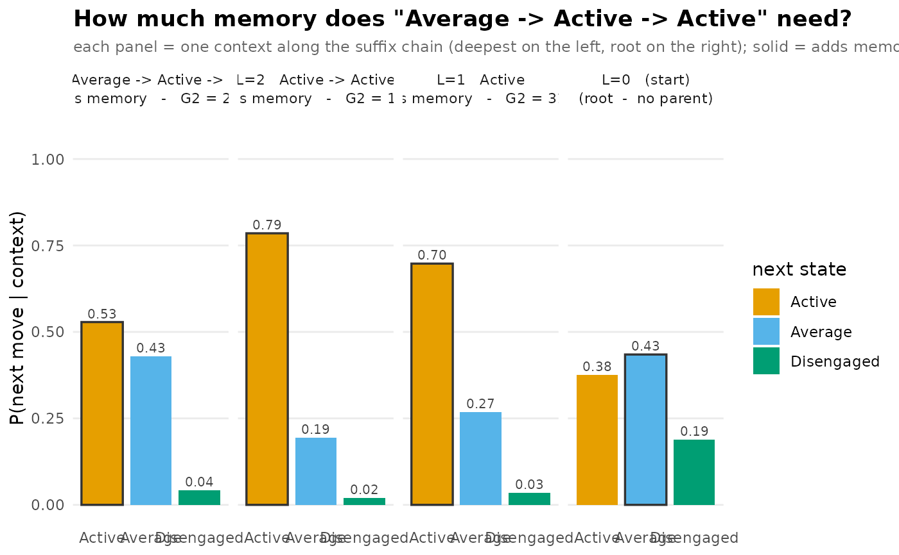

plot_pruning() plots how much memory one pathway needs: how many past
states are needed to predict what follows it. A context tree keeps a longer
history only when it predicts the next state differently from its shorter
suffix, and the plot makes that decision visible for one pathway. It follows
the pathway's suffix chain (the full history, then the history without its
earliest state, and so on down to the root) and draws the next-state
distribution at every link as its own panel, deepest history on the left and
the root on the right.
Each context is classified by the \(G^2\) rule of
prune_tree(): the likelihood-ratio statistic of its
next-state counts against its one-shorter parent is compared with the
chi-square critical value at alpha. A context whose own
\(G^2\) exceeds it adds memory and is drawn solid; a context
below it that is kept only because a deeper context exceeds it is drawn
at medium opacity; a context below it with no deeper context exceeding
it is pruned and drawn faded. Each panel title gives the
context, the decision and \(G^2\). The distributions are the node
values reported by tree_pathways() and
query_pathway().
Pass an unpruned tree so that the whole chain is visible. To prune the
whole tree use prune_tree(); to compare pruning rules use
compare_pruning().
Conditions
transitiontrees_bad_input(error)
treeis not atransitiontreesobject;alphais not in (0, 1);pathwayis not a context of the tree.
Examples
tree <- context_tree(trajectories, max_depth = 3)
plot_pruning(tree, "Average -> Active -> Active")
